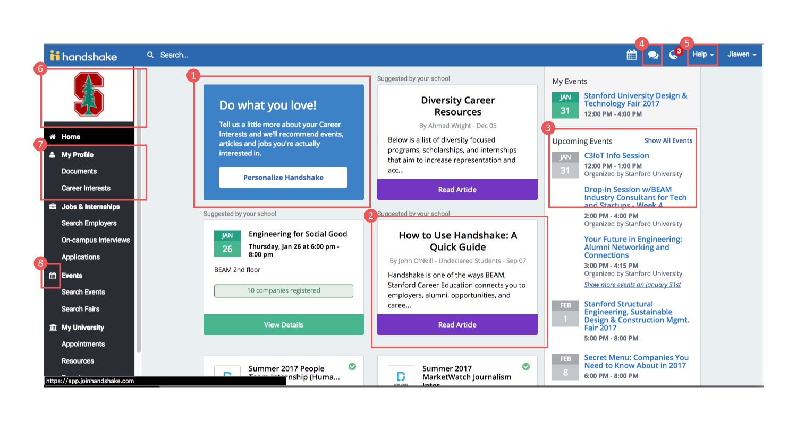
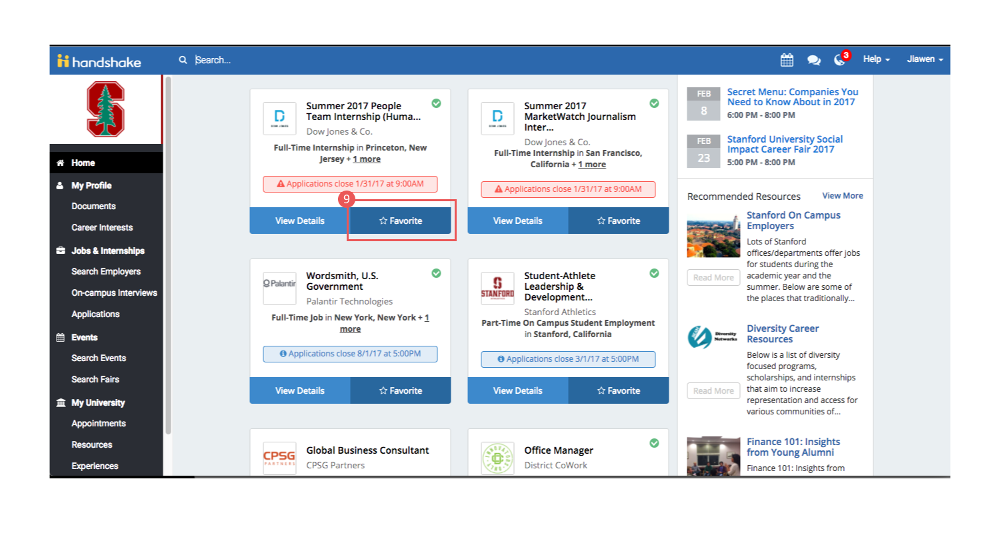

Handshake redesign
- 3 min read
my Role
- Heuristic evaluations; UI & UX Design
This is a redesign of Handshake's website homepage for students. Handshake is the place where students, career centers, and recruiters come to meet, talk, and share opportunities. As a student at Stanford, I mainly use it to look for career-related events and job opportunities, so this redesign is based on problems I found in my daily uses of the website.
Problems found in the original homepage

1. The most salient element of the homepage is the tile for personalizing Handshake. However, this feature is mostly a one-time task for users. Once you set up your interests, it doesn't seem necessary that this feature should remain front and center on the homepage.
2. The three tiles following the first one are for events/articles suggested by the user's school. It is likely that Handshake and the schools have an agreement that mandates display of this kind of information. But it is not very helpful for users. The event suggested is dated, while the articles remain there after you've read them. The articles show up again in the "Resources" tab on the left side menu.
3. The upcoming events shown on the right side of the page are a comprehensive list of all events, which exactly duplicates the information provided by the "Events" tab on the menu. It also makes the homepage more cluttered than necessary.
4. The "Messages" icon on the top-right corner could be incorporated into the "Notifications" icon next to it, since it is probably not a very common user case that people will communicate through messages here.
5. The "Help" drop down menu contains only one component: "Get help", which renders the drop-down menu redundant.
6. The school picture on top of the side menu links to the same page as "My university" tab on the menu. Also, it doesn't seem necessary to display the picture since students are aware of which schools they are attending.
7. The sequence of the tabs on the side menu is questionable. I personally think the sequence of a menu should be based on the frequency of usage. The first section after "Home" is "My profile", which does not require edits very often.
8. The icon for "Events" is the same as the icon for "Calendar" on the top-right corner, which might be confusing.

9. Scrolling down to the second screen, it seems unnecessary to have a huge button that says "Favorite". The use of a darker blue in contrast to the lighter blue right next to it somewhat gives off the feeling that the button has already been clicked.
10. The rest of the home page is a never-ending list of jobs, which seems to resemble the "Jobs & Internships" tab on the side menu.
General redesign goal
Since Handshake is already collecting personal interests of students, the homepage could be more personalized, instead of repeating the general information displayed by the other pages.
Redesign and the reasonings behind

To start with, I reorganized the left side menu. I took out the school picture so that all the tabs can be seen on the first screen. The sequence is now based on my understanding of the frequency of each section's usage. While I do think the breakdown of each section leaves room to be improved, this redesign solely focuses on the homepage, so I didn't change the subsections. I also took out all the icons because they're not adding information to the page. I think the names of the sections are self-explanatory.
On the body of the page, the first thing would be reminders of the events that the user is attending, because I think the homepage should serve as the reminder of the urgent tasks. The rest of the page consists of customized recommendations of events, jobs, and resources. The lists of each part are limited, only displaying the most relevant to the user's interests. A comprehensive list of events, jobs, and resources available would be shown in each tab on the left side menu. I didn't specify the "recommended resources" part, but it should look similar to the other two parts.
The color palette I chose is lighter than the original design of Handshake, which is a personal preference. I always considered the colors of Handshake too dim. In my redesign, the overall use of blue keeps the look of the website professional and consistent with the company's main color. I use colors on a minimalist level, only use colors on call-to-action buttons, dates and dealines, so that important information is highlighted.
I also refrained from using too many icons. I only used icons on the top bar, and a star icon for "favorite" on the tiles. In both cases I think the icons I used are self-explanatory.
Some further thoughts
The side menu could have been folded to further reduce cluttering.
There could be a section of "My favorite jobs" under "My events" that contains jobs the user has favorited but not yet applied, and are close to the deadlines for application.
The green cirle with a check in it is the part where I'm unsure of. It could be confusing for first-time users. In the original homepage, hovering on the circle shows that it means the user is qualified for all the requirements of the job. I considered putting it under the star sign but I was afraid that it would be too confusing and cluttered. So I moved it to the corner of the tile.
Key learnings
Unsolicited redesign is HARD. Knowing nothing about the business concerns and real user data, I basically had to rely on logic and personal experience.